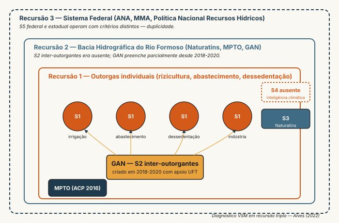

Bacia do Formoso: caso BHRF
Fase 4 — Capítulo 2 (Alves 2022; Alves & Schwaninger 2025)
A pergunta operacional
Aplicar o aparato cibernético da Fase 4 a um caso real é o que separa pedagogia de retórica. O caso da Bacia Hidrográfica do Rio Formoso (BHRF), no sudoeste do Tocantins, foi diagnosticado por Alves (2022) em sua tese de doutorado com diagnóstico VSM em recursão tripla — federal, estadual, usuários. Este capítulo reconstrói o caso com detalhe documental e extrai as lições transferíveis para análogos institucionais, incluindo a pesquisa-cenário UNITINS↔︎UNIFAL-MG conduzida por Joana Beraldo.
O sistema-objeto
A BHRF é o complexo hidrográfico do Rio Formoso e seus afluentes, abrangendo municípios de Lagoa da Confusão e Formoso do Araguaia (Tocantins), em região de agricultura irrigada de larga escala — predominantemente rizicultura por inundação, complementada por soja, melancia e melão. A região concentra um dos maiores projetos de irrigação do país, com infraestrutura de canais e tomadas d’água instaladas a partir dos anos 1980. Estresse hídrico crescente desde 2010 acentuou conflitos por uso entre a agricultura irrigada (consumo dominante), abastecimento humano (Cristalândia, Lagoa da Confusão), dessedentação animal (pecuária em propriedades menores), e o regime de vazão ecológica do próprio rio.
[fonte secundária: dados de uso do solo via Atlas das Águas do Tocantins; tese Alves (2022)]
A linha do tempo da Ação Civil Pública
Em 2016, o Ministério Público Estadual do Tocantins (MPTO), via Promotoria Regional Ambiental da Bacia do Alto e Médio Araguaia — então conduzida pelo promotor Francisco Brandes Júnior —, propôs Ação Civil Pública nº 001070-72.2016.8.27.2716 por uso conflitante e degradação dos recursos hídricos da BHRF [fonte: portal MPTO]. A ação demandava medidas estruturais para uso sustentável dos recursos hídricos, não apenas reparação de dano específico.
Em julho de 2020, a Justiça Estadual atendeu a pedido cautelar do MPTO e suspendeu outorgas de captação de grandes empreendedores agroindustriais na bacia, exigindo que a continuidade da operação dependesse de comprovação documental e técnica [fonte: portal MPTO; decisão TJTO]. A decisão foi marco institucional: pela primeira vez no Tocantins, o Judiciário interrompeu juridicamente o regime de outorgas como medida cautelar ambiental.
Posteriormente, em decisões subsequentes (2021–2024), parte dos produtores recuperou autorização condicionada ao pagamento de multas e a adesão a programa de monitoramento e fiscalização conduzido pelo Naturatins (Instituto Natureza do Tocantins, agência estadual de meio ambiente) [fonte: jornalismo regional — Gazeta do Cerrado, Atitude TO]. O processo permanece em acompanhamento até o presente.
O Grupo de Acompanhamento e Negociação (GAN)
Como resposta institucional ao impasse, foi articulado entre 2018 e 2020 o Projeto de Gestão de Alto Nível na Bacia do Rio Formoso, comumente referido como GAN — sigla que opera tanto como “Gestão de Alto Nível” quanto, em alguns documentos, como “Grupo de Acompanhamento e Negociação”. O projeto, com apoio técnico da Universidade Federal do Tocantins (UFT) e participação de Naturatins, MPTO, ANA federal, comitê de bacia e usuários, estabeleceu três etapas estruturantes [fonte: tese Alves (2022); documentos UFT]:
- Diagnóstico da disponibilidade hídrica real e da demanda efetiva, com instrumentação de medição em pontos-chave da bacia.
- Monitoramento contínuo de vazões e captações, com transparência de dados e protocolo de alerta em estiagem.
- Revisão de todas as outorgas vigentes, incluindo as anteriores ao monitoramento, com critério de adequação ao novo regime.
A composição multi-stakeholder do GAN foi novidade no contexto institucional tocantinense. A tese de Alves diagnostica o GAN como tentativa explícita de construir S2 inter-outorgantes — função de antioscilação que, antes da criação, estava ausente: cada outorga operava como se as demais não existissem.
Diagnóstico VSM em recursão tripla

Alves (2022) estrutura o diagnóstico em três níveis de recursão simultâneos.
Recursão 1 — usuários (cada outorga é um S1):
- S1: cada outorga ativa de captação (irrigação, abastecimento humano, dessedentação animal, uso industrial). Cada uma é, por si, um sistema viável que opera autonomamente — capta, distribui, drena.
- S2 originalmente ausente: pré-2018, não havia coordenação lateral entre outorgantes. Cada produtor planejava captação ignorando os demais. Conflitos emergiam apenas no tribunal.
- S3 fraco: o Naturatins operava como S3 nominal — emitia outorgas, mas sem instrumentos de monitoramento em tempo real nem capacidade de resposta rápida a infrações.
- S4 inexistente: nenhuma instância monitorava sistematicamente o cenário futuro de demanda hídrica vs. oferta climática. Decisões de outorga eram dimensionadas em série histórica curta, sem projeção.
- S5: identidade da bacia operacional não estava declarada — era “área de irrigação”? “rio com vazão ecológica”? “fonte de abastecimento humano”? Cada ator pressupunha diferente.
Recursão 2 — bacia hidrográfica como S1 do estado:
- S1: a BHRF inteira como sistema viável estadual.
- S2 entre bacias: havia, em tese, na ANA. Mas comunicação federal-estadual sobre BHRF era esparsa.
- S3 estadual: Naturatins + Secretaria de Meio Ambiente. Capacidade limitada de imposição.
- S4: monitoramento de tendências climáticas regionais, ausente até 2020.
- S5: política estadual de recursos hídricos formulada, mas com baixa tração operacional.
Recursão 3 — sistema federal de águas:
- S1: cada bacia hidrográfica do país como S1 federal.
- S5 federal vs estadual conflitante: ANA federal e Naturatins estadual operavam com critérios diferentes. O “sistema” tinha duas identidades — duplicidade que aparece em quase todo S5 federativo brasileiro.
A criação do GAN supre parcialmente S2 da recursão 1 e cria embrião de S4 na recursão 2. S4 da recursão 3 permanece lacuna central: não há, no aparato federal, instância dedicada à inteligência climática-hídrica de longo prazo aplicada a bacias específicas. A inflexão climática global vai testar essa lacuna nos próximos 10–15 anos.
Modelagem-como-governança aplicada
Alves; Schwaninger (2025) retoma o caso BHRF na revista Environmental Management e propõe camada adicional: modelagem dinâmica do balanço hídrico construída não para prever vazão, mas para funcionar como órgão regulador adicional — programa Conant-Ashby explícito. O modelo é desenvolvido junto com os atores do GAN; sua validação é dupla:
- Validação descritiva: replica padrões históricos.
- Validação cibernética: o modelo amplia \(H(R)\) dos atores que o usam? Reduz \(H(O)\) observado nos indicadores essenciais (vazão mínima, conflitos abertos, multas)?
A inflexão é o que distingue a contribuição: validação cibernética é critério distinto da preditiva, e exige operacionalização explícita. Discutida em F4-01 (modelagem como descrição vs como regulação).
Lições transferíveis para análogos institucionais
A estrutura do caso BHRF é, na leitura cibernética, genérica:
- Múltiplos S1 autônomos com recurso compartilhado finito.
- S2 originalmente ausente.
- S4 inexistente em pelo menos uma das recursões.
- Conflito que escala até envolver Ministério Público.
- Criação reativa, sob pressão judicial, de instância de coordenação.
Essa estrutura aparece em rede educacional pública (UAB-UNITINS com polos compartilhando docentes e infraestrutura, IFs em redes regionais, sistema federal com recursos limitados), saúde (SUS com unidades concorrendo por leitos), saneamento (concessões municipais conflitantes), e várias políticas finalísticas brasileiras. O valor pedagógico do caso é precisamente a transferibilidade.
Paralelo institucional com a pesquisa-cenário (Joana)
Para a coordenação de curso UAB-UNITINS que Joana analisa, o paralelo é direto. Polos UAB são S1 autônomos com recursos compartilhados — docentes (frequentemente compartilhados entre polos via plataforma), infraestrutura técnica (tutoria, secretaria pedagógica, laboratórios virtuais), banca de avaliação. S2 inter-polos tipicamente ausente: cada coordenação local opera como ilha, descobrindo problemas regionais por censo MEC posterior. S3 da pró-reitoria opera com instrumentos limitados — relatórios trimestrais de matrícula que chegam quando a evasão já consolidou. S4 (inteligência sobre evasão regional, perfil discente, tendências socioeconômicas) frequentemente terceirizado para o censo MEC anual, ou inexistente.
A pergunta-pesquisa de Joana herda o argumento BHRF: seria possível um “GAN educacional”? Função explícita de S2 entre polos UAB, com mandato e instrumentos similares aos do GAN da BHRF — diagnóstico de demanda real, monitoramento contínuo de fluxos discentes, revisão sistemática de outorgas (no caso, das ofertas de vagas)? A hipótese da tese é que sim, e que a estrutura institucional de criação reativa que funcionou na BHRF pode servir de modelo. Mas a transferência não é trivial: a “outorga” educacional não tem natureza física idêntica à hídrica; o MPTO da educação seria o MPF? O Tribunal de Contas? As pressões institucionais são diferentes, e a urgência climática que catalisou o GAN da BHRF não tem análogo direto no setor educacional — ainda que evasão crônica seja problema persistente, raramente vira crise pública.
A diferença substantiva é onde a pesquisa de Joana ganha valor próprio. Não basta transpor o aparato; é preciso identificar o que muda quando o recurso compartilhado é discente, não hídrico.
Pergunta de verificação
Factual. Liste, com base no texto: (a) ano de início da Ação Civil Pública; (b) dois atores institucionais que compõem o GAN; (c) duas etapas estruturantes do projeto; (d) qual recursão VSM tem S4 mais ausente. Cite caveats explícitos onde a fonte é secundária.
Diagnóstica. Para cada conflito específico — uso humano vs. agrícola, uso agrícola montante vs. jusante, uso atual vs. futuro climático —, identifique qual função VSM (S1-S5) é dominante na falha e qual intervenção de variedade (\(H(D)\), \(H(R)\), \(H(O)\)) seria mais barata. Justifique.
Propositiva. Aplique a estrutura BHRF ao caso de Joana (UNITINS-EaD ou UNIFAL-MG presencial). Identifique: S1, S2, S3, S4, S5; ausências sistemáticas; análogo institucional ao GAN; pelo menos uma diferença substantiva entre o caso BHRF e o caso educacional que torne a transferência não-trivial.
Algumas afirmações processuais sobre a ACP nº 001070-72.2016.8.27.2716 são reconstruídas a partir de fontes secundárias (jornalismo regional, portal MPTO, tese Alves (2022)). Antes de citar publicamente o caso em texto próprio, valide os detalhes processuais com o portal MPTO ou com a tese diretamente.
Figura referenciada: #fig-bhrf-recursao-tripla (diagrama VSM da BHRF em recursão tripla — federal, estadual, usuários). Pendente em SVG.